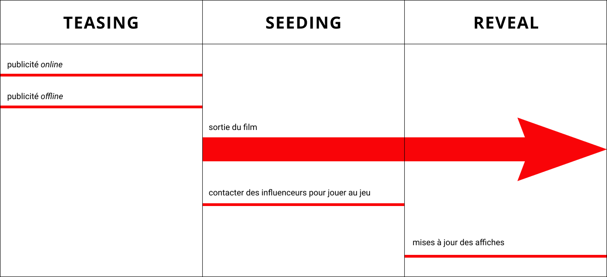

Les bilans de la sécurité routière montrent que les taux d’accidents de la route chez les jeunes conducteurs sont grandissants. Le problème est de parvenir à capter l’attention dans une société où nous sommes constamment bombardés d’informations. Les moyens à mettre en place doivent donc se montrer créatifs : il faut surprendre, choquer ou manipuler pour forcer ou renforcer l’attention du public.
Les questions posées sont les suivantes :
Un média émergeant très actuel est le film interactif, un genre hybrique à mi-chemin entre le jeu vidéo et le film dans lequel le spectateur est amené à participer en faisant des choix et en effectuant des actions. Parmi les films interactifs réalisés récemment on trouve Bandersnatch diffusé sur Netflix qui a beaucoup plu aux 18-25 ans.
Le joueur incarne le personnage principal dans un film à la première personne qui donne à voir une soirée étudiante type. Le film proposera plusieurs fins possibles qui seront déterminés par les choix du joueur au cours de sa partie. Dans toutes les fins, il se retrouve confronté à un accident de voiture, qu’il aura causé ou non, à cause de l’alcool. Tout l’intérêt de la campagne réside dans la chute et l’inattendu.
Les arguments sont :
Le film interactif sera disponible librement et gratuitement sur internet, via un site web prévu pour l’occasion. Le titre Jeudi Soir a d’ailleurs été choisi car il représente à la fois une date et une annonce. Dans la culture commune, le jeudi soir est la date type des fêtes étudiantes, il a donc une forte connotation pour la cible des 18-25 ans. Dans cette logique, il sera pertinent que les temps forts de la campagne se déroulent les jeudis soirs (annonce, sortie, etc).
La première phase de la campagne a pour but de créer le désir et l’attente. Elle consiste à faire de la publicité au film interactif à travers un teaser qui sera diffusé en priorité sur Youtube comme vidéo publicitaire pour toucher la cible des jeunes de 18 à 25 ans.
Autour de ce teaser graviteront des annonces publicitaires telles que des affiches print diffusées dans les grandes villes (qui sont les principaux foyers étudiants et jeunes conducteurs) notamment sur les panneaux d’affichages, les abris-bus et dans les métros.
Dans la deuxième phase, on trouve deux étapes :
Enfin la troisième et dernière phase de la campagne est la phase d’attribution : la Sécurité Routière révèle que le film interactif était de son fait depuis le début. Une mise à jour des affiches est effectuée, révélant le message derrière le film. “Jeudi soir, parviendrez-vous à les sauver ?” devient “Boire ou conduire, il faut choisir”, un clin d’oeil aux choix binaires auxquels ont dût faire face les joueurs durant leurs parties. L’affiche arborera le logo de la Sécurité Routière pour permettre l’attribution de la campagne.